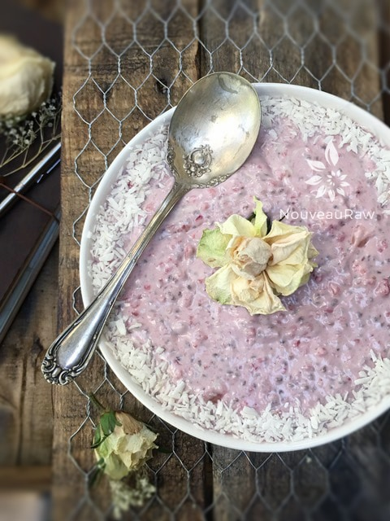

Strawberry Rhubarb Coconut Chia Pudding

~ raw, vegan, gluten-free ~
I made this chia pudding for my dear friend, Suzie. She had expressed her love for rhubarb and who was I to deny her?! I arranged for a special delivery directly to her house, and she ended up eating two jars right off the bat. Next came an email with a valid question… “Can I eat too much chia in one day?” Valid question.
Fiber… Chia is high in fiber… The dietary fiber content is approximately 56.5 g per 100 g of seeds — 14.1 g being soluble. Unlike dietary fiber from cereal grains, the soluble fiber content of chia seeds takes more time to travel through the intestinal tract, which helps add bulk to the stool and provides a slower rate of glucose absorption.
MayoClinic.com recommends men 50 and younger to consume 38 g of fiber a day; women, 25 g. So, as you can see, chia can be an excellent addition to your diet just for fiber content alone.
If you are new to working on increasing your daily fiber, I recommend that you start on the low end and work your way up. Give your body time to adjust to the increase, so you don’t suffer from bloating and/or possible constipation. It is also a good idea to increase your water intake during the process to help keep things moving.
And oh, by the way, this pudding tastes amazing too, I got all caught up in the fiber facts. The sweetness of the strawberries balances the tartness of the rhubarb. And the healthy fats found in the coconut cream helps to mellow out the tartness just a tad as well as giving it a wonderfully smooth and creamy mouth-feel. It is cooling, refreshing, and filling.
yields 4 1/2 pints
Preparation:
- For the rhubarb, you can follow the link above to see how I made that. This process will help take the tart “bite” away, making it sweet and soft.
- In the blender combine the rhubarb, strawberries, coconut cream, almond milk, chia seeds, and stevia. Blend until combined.
- Allow the mixture to sit for 20 minutes so the chia seeds can thicken everything up. Mix one last time before dishing up just in case any of the ingredients started to settle.
- Pour into jars and place in the fridge to firm up or eat right away.
- This pudding should keep for 3-4 days in the fridge.

© AmieSue.com